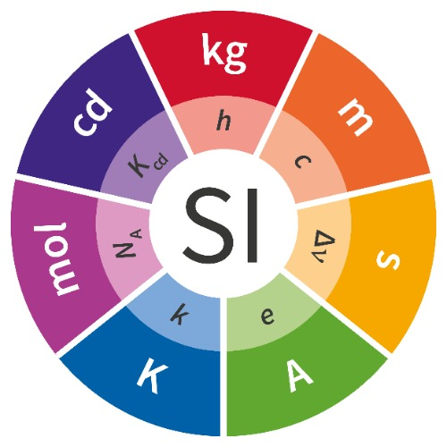

国际单位制（SI）
各个单位的转化经常出现在解谜中。

7个基本单位
- 时间 秒
定义：国际单位制中的时间单位，符号s。当铯频率ΔνCs，即铯133原子不受干扰的基态超精细跃迁频率，以单位Hz即s-1表示时，取其固定数值为9 192 631 770来定义秒。 - 长度 米
定义：国际单位制中的长度单位，符号m。当真空中光速c以单位m/s表示时，取其固定数值为299 792 458来定义米，其中秒用ΔνCs定义。 - 质量 千克
定义：国际单位制中的质量单位，符号kg。当普朗克常数h以单位J s即kg m2 s-1表示时，取其固定数值为6.626 070 15×10-34来定义千克，其中米和秒用c和ΔνCs定义。 - 电流 安培
定义：国际单位制中的电流单位，符号A。当基本电荷e以单位C即A s表示时，取其固定数值为1.602 176 634×10-19来定义安培，其中秒用ΔνCs定义。 - 热力学温度 开尔文
定义：国际单位制中的热力学温度单位，符号K。当玻尔兹曼常数k以单位J K-1即kg m2 s-2 K-1表示时，取其固定数值为1.380 649×10-23来定义开尔文，其中千克、米和秒用h，c和ΔνCs定义。 - 物质的量 摩尔
定义：国际单位制中的物质的量的单位，符号mol。1摩尔精确包含6.022 140 76×1023个基本单元。该数称为阿伏伽德罗数，为以单位mol-1表示的阿伏伽德罗常数NA的固定数值。
一个系统的物质的量，符号n，是该系统包含的特定基本单元数的量度。基本单元可以是原子、分子、离子、电子、其它任意粒子或粒子的特定组合。 - 发光强度 坎德拉
国际单位制中的沿指定方向发光强度单位，符号cd。当频率为540×1012 Hz的单色辐射的光视效能Kcd以单位lmW-1即cd sr W-1或cd sr kg-1 m-2 s3表示时，取其固定数值为683来定义坎德拉，其中千克、米、秒分别用h, c 和ΔνCs定义。